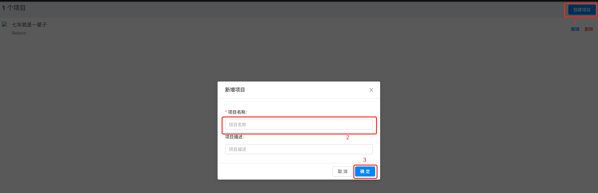
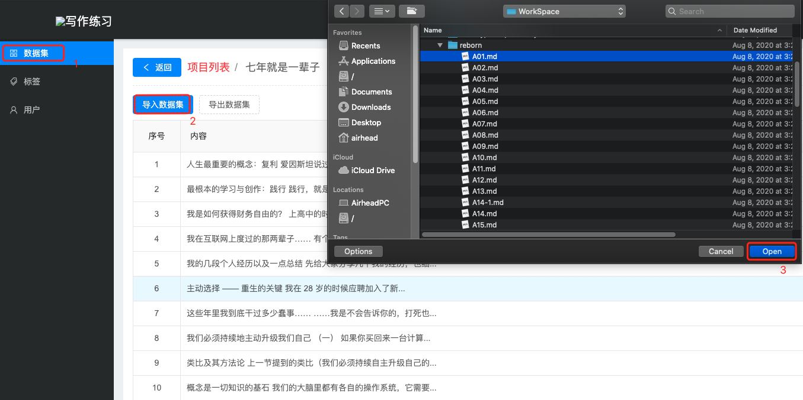
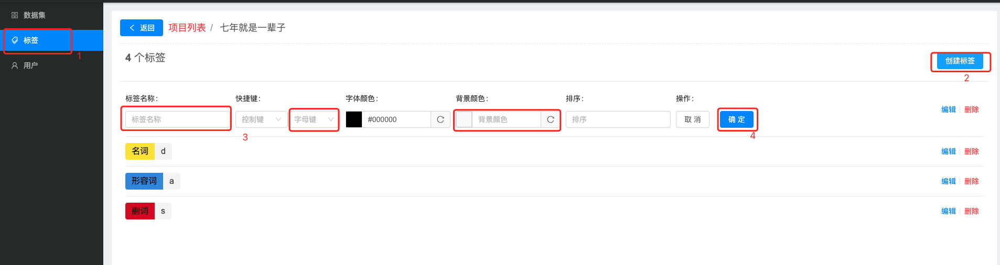
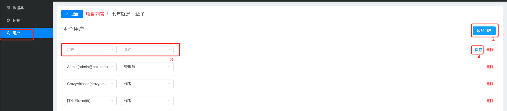

说明
由小熊老师组织的笑来写作课作业群“且慢且慢且慢”，在晓樱的发动下，开始做《七年就是一辈子》的词性标注。我看到群里传文件比较麻烦，而且标注可能在不同电脑上，不利于标注的整理。而标注的方式和我去年做的一款医学知识标注工具类似，于是改了部分功能，部署起来方便大家标注。
下面我说说该工具如何使用。
重要：本工具主要是在Chrome浏览器中开发测试，请尽可能使用Chrome浏览器。
注册与登录
用浏览器打开http://annotation.goldsyear.com/，此时出现登录界面，如果有用户可直接登录。
无用户时需要先注册，点击“注册”链接。填写用户名，昵称，密码，注意用户名和密码为登录使用，而昵称主要用于区分不同的标注人。
标注《七年就是一辈子》
标注的项目采用邀请制，项目创建者和已被邀请的小伙伴可以添加其他小伙伴共同标注项目。如果需要标注其他项目，可以参看“创建项目”小节。
“七年就是一辈子”项目由admin@box.com用户创建，密码已公布在群里，请翻看聊天记录。当然，也可联系我（罗发强）或者小熊老师进行用户添加，以后会有更多小伙伴可以添加，这里就不再赘述了。
有了项目权限后，点击“七年就是一辈子”即可进入标注页面。
标注
标注方法
把需要的词划出来（点击鼠标左键并摁住不放，滑动鼠标，松开鼠标左键），之后用鼠标点击对应的词性按钮，一个词就标注出来了。词性按钮后由字母标识，是快捷键，把词划选出来后，也可以在键盘上按下对应键把词性标注出来。
学习
如果有其他小伙伴已经标注了，在页面上会出现该小伙伴的昵称。点击该小伙伴的昵称，就可以看到他标注的情况，开始学习了。
创建项目
如果想发起新的标注项目，可以自己创建项目，导入文章，邀请小伙伴一起来标注。
新创建的项目默认是私有的，也就是只有创建者可见，其他人是看不可见的。这也是为什么很多人注册后项目列表是空的原因。当其他小伙伴被创建者添加到项目后，这个小伙伴就可以标注项目，同时也获得了邀请其他小伙伴的权限。
创建项目
进入主页，点击“创建项目”，填写项目名称，点击“确定”，完成项目创建。之后点击项目列表上的“编辑”页面进行后续设置。

导入文章（数据集）
点击“数据集”，点击“导入数据集”，在弹出的对话框中，选择需要导入的文件，当前支持txt和md格式的文件单独导入。也可以把多个txt文件打包成zip文件导入。

创建标签
点击“标签”，点击“创建标签”，填写标签名称，快捷键，背景颜色，点击“确定”，完成标签的创建。

邀请小伙伴
点击“用户”，点击“添加用户”，选择用户，角色，点击“保存”，完成小伙伴的添加。

常见问题
注册提示用户名或者昵称被占用
用户名和昵称系统内是唯一的，请尝试更换用户名和昵称，重新注册。
忘记密码问题
该工具原来是一个内部工具，用户管理的功能做的比较简单，用户注册也是临时添加的功能，导致不支持修改密码。当前只能添加我的微信进行密码重置。
为什么我看不到“七年就是一辈子”项目
标注的项目采用邀请制，项目创建者和已被邀请的小伙伴可以添加其他小伙伴共同标注项目。可在作业群“且慢且慢且慢”反馈自己的用户名，我看到之后会及时添加用户的。
导入数据集出现乱码
导入的数据集只支持UTF-8格式，其他格式如GBK（一般Windows默认创建的文本使用了该编码）会出现乱码。需要注意用“记事本”保存（或另存为）时注意选择编码格式UTF-8。
BUG反馈
可以通过以下几种方式进行BUG反馈：
- 通过微信公众号CrazyAirhead的推文如何使用写作练习词性标注工具进行留言。
- 通过我的个人BlogCrazyAirhead的博文如何使用写作练习词性标注工具进行留言。
- 我也专门开了个Github仓库writing，可以在这里提issues。
- 当然你可以添加我的微信，反馈问题。
其他问题
扫码添加我的微信”Crazy_Airhead”。

感谢
感谢群友的鼓励和建议，感谢小熊老师，量体才一的测试，感谢果兒的BUG反馈。